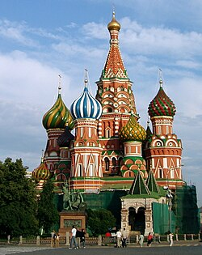

Introducción:Rusia, el país más grande del mundo por extensión, cuenta con una historia y cultura ricas y diversas que se han desarrollado a lo largo de más de un milenio. La historia rusa comienza con los eslavos orientales y la fundación del estado de Rus de Kiev en el siglo IX, que fue uno de los estados más influyentes de la Europa medieval. Este primer estado ruso adoptó el cristianismo ortodoxo en 988, una decisión que tuvo profundas implicaciones culturales y religiosas, ya que vinculó a Rusia con el mundo bizantino y la tradición ortodoxa oriental. Durante el siglo XIII, Rusia sufrió la invasión mongola, que resultó en más de dos siglos de dominio tártaro. Esta ocupación dejó una huella significativa en el desarrollo político y cultural del país. No fue hasta el siglo XV, con el fortalecimiento del Gran Ducado de Moscú, que Rusia empezó a liberarse de la dominación mongola. Iván III, conocido como Iván el Grande, unificó los diversos principados rusos y comenzó a centralizar el poder, sentando las bases del estado ruso moderno. |
 |
El período imperial ruso comenzó con Iván IV, conocido como Iván el Terrible, el primer zar de Rusia, quien expandió enormemente el territorio ruso y estableció un autocrático gobierno centralizado. La dinastía Romanov, que comenzó con el zar Miguel I en 1613, llevó a Rusia a ser una de las principales potencias europeas. Bajo Pedro el Grande y Catalina la Grande, Rusia experimentó una era de reformas y expansión territorial que modernizó el país y lo convirtió en un imperio influyente.
La cultura rusa es conocida por sus contribuciones significativas en diversas áreas como la literatura, la música, la danza y las artes visuales. Durante el siglo XIX, Rusia produjo algunos de los más grandes escritores de la literatura mundial, como Lev Tolstói y Fiódor Dostoyevski, cuyas obras exploraron profundamente la condición humana y los dilemas éticos y filosóficos de su tiempo. La música clásica rusa también floreció con compositores como Piotr Ilich Chaikovski, cuyo ballet "El lago de los cisnes" sigue siendo una pieza fundamental del repertorio clásico mundial.
El siglo XX fue un período de inmensas convulsiones para Rusia. La Revolución Rusa de 1917 llevó al derrocamiento de la monarquía y la instauración del régimen comunista bajo los bolcheviques. La Unión Soviética, establecida en 1922, se convirtió en un actor principal en la escena política mundial, especialmente durante la Segunda Guerra Mundial y la Guerra Fría. El régimen soviético, liderado por figuras como Lenin y Stalin, implementó políticas de industrialización forzada y colectivización agraria, que tuvieron un impacto profundo y a menudo devastador en la sociedad rusa.
La disolución de la Unión Soviética en 1991 marcó el comienzo de una nueva era para Rusia, con la transición hacia una economía de mercado y la apertura política. Sin embargo, este período también trajo consigo numerosos desafíos, incluyendo crisis económicas, corrupción y problemas de gobernabilidad. Bajo el liderazgo de Vladímir Putin en el siglo XXI, Rusia ha buscado reestablecer su influencia en la escena global, aunque con un retorno a tendencias autoritarias en su política interna.
En términos de identidad cultural, Rusia es un crisol de diversas etnias y tradiciones, con más de 160 grupos étnicos y más de 100 idiomas hablados en su territorio. La Iglesia Ortodoxa Rusa sigue desempeñando un papel importante en la vida espiritual y cultural del país. Además, la literatura, el cine, el teatro y el ballet continúan siendo áreas de destacada producción cultural, reflejando tanto la rica herencia histórica como las complejidades de la vida contemporánea rusa.
Escuchar para mas informacion